Como reto esta vez, tenemos que construir un columpio.

Tenemos que construir una base estable para que una parte móvil pueda moverse a modo de columpio.
Para ello, utilizarán las vigas blancas más largas y cualquier otra pieza que sirva crear la estructura del
columpio.
Como muestra tenemos la siguiente estructura paso a paso.
Primero construimos los laterales del columpio.

A continuación construimos las uniones entre los laterales y la barra superior.
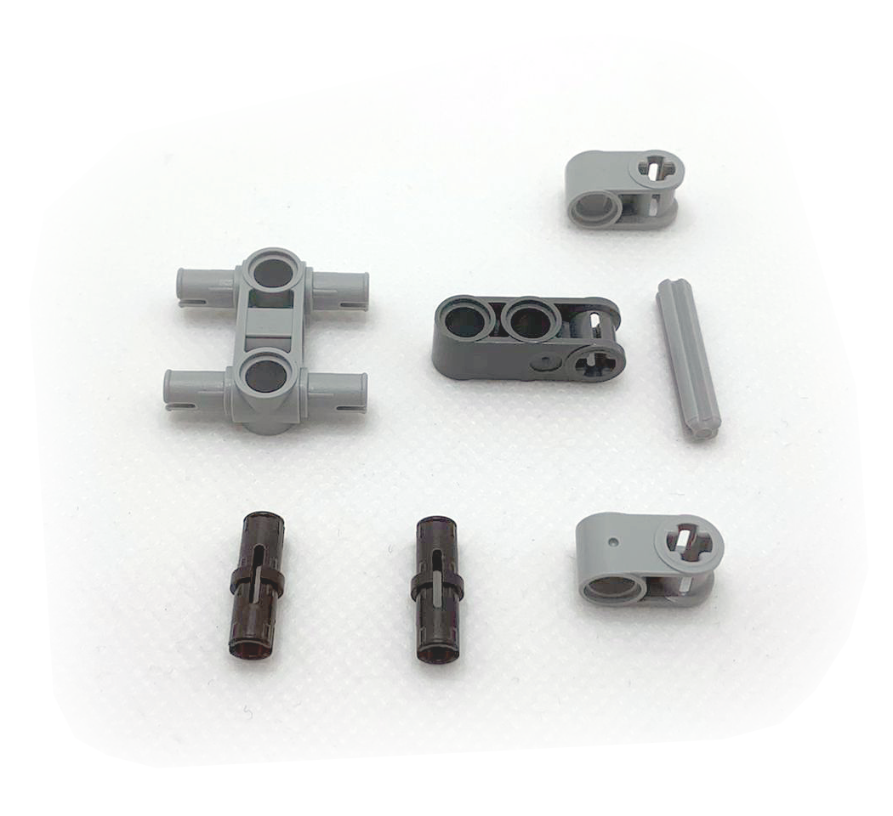
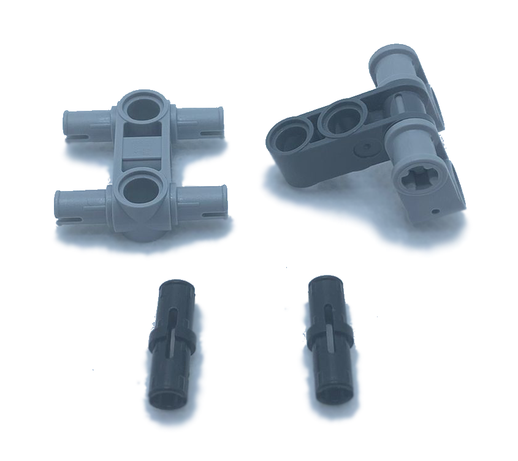
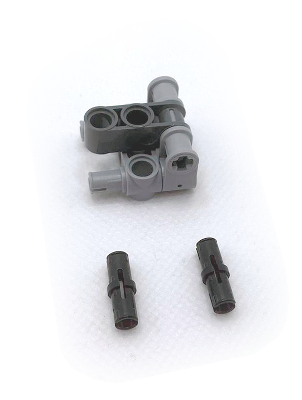
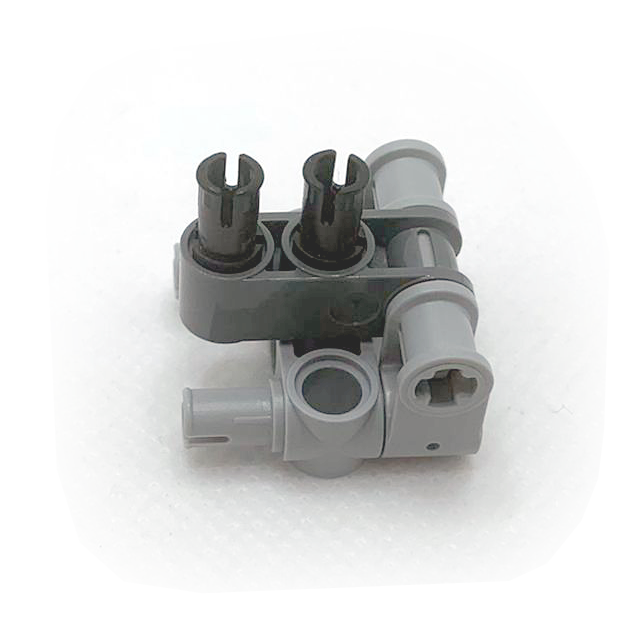
De estas piezas hacemos dos, una para cada lado y las unimos a la barra superior.
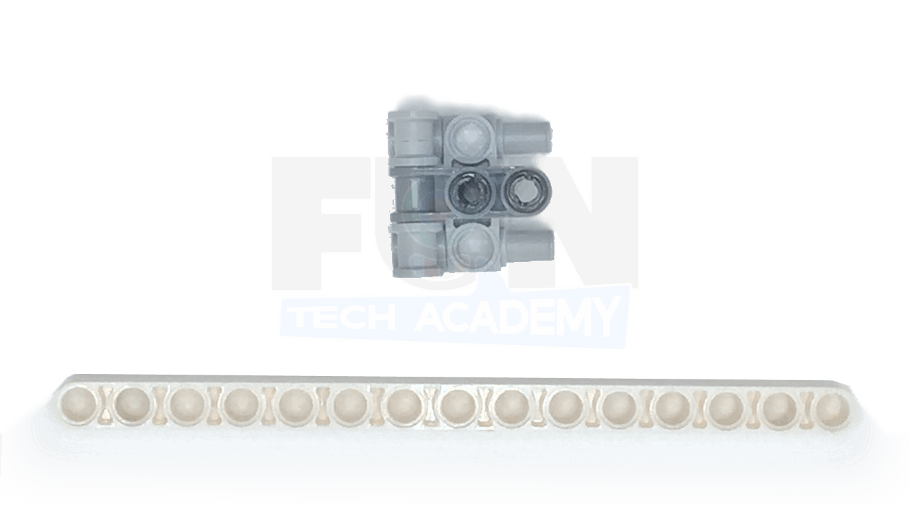
Después le añadimos el eje que se va a mover cuando balanceemos la silla del columpio, con los travesaños de la silla.
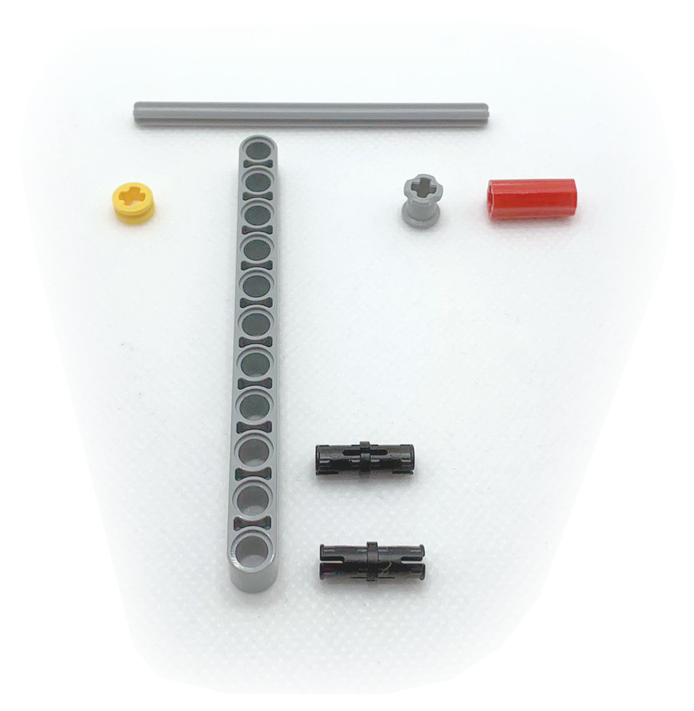
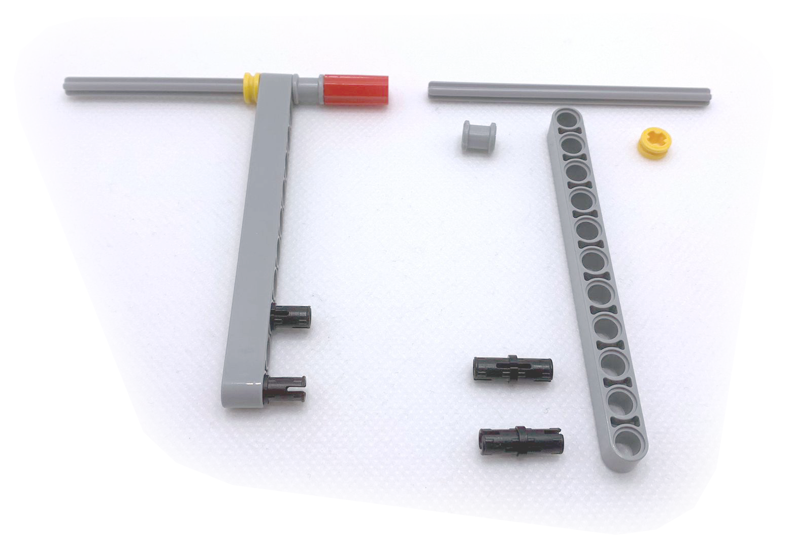
Montamos la silla para añadirla a los travesaños
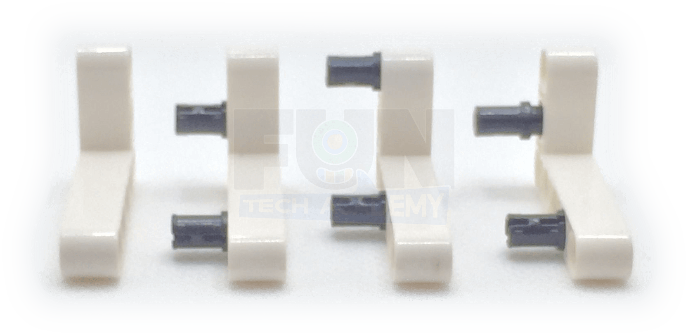
Montamos totalmente la silla con los travesaños y el eje que permitirá balancearlo.
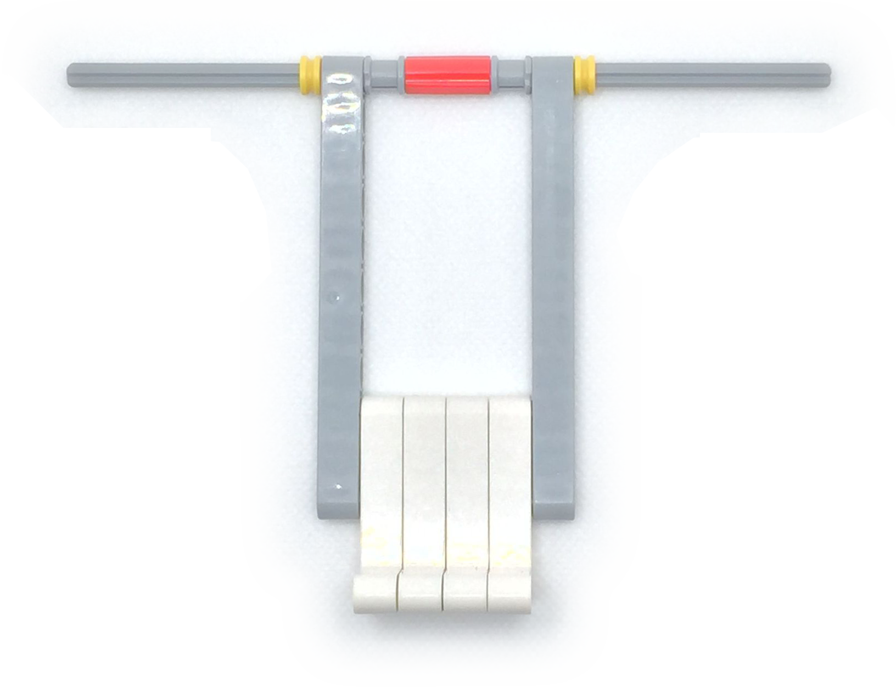
Le añadimos los dos remates en los extremos del eje de la silla para que no se mueva.
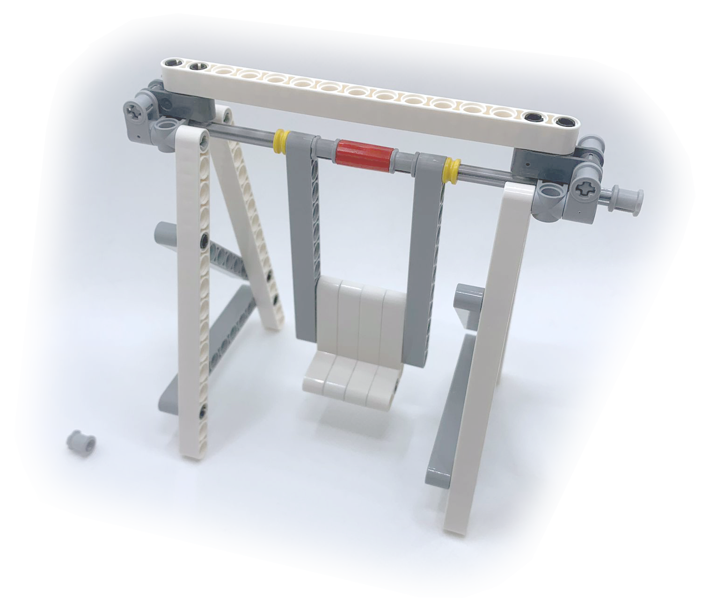
Finalmente, terminamos de montarlo todo y ajustamos las piezas para que quede robusto pero que se pueda balancear.
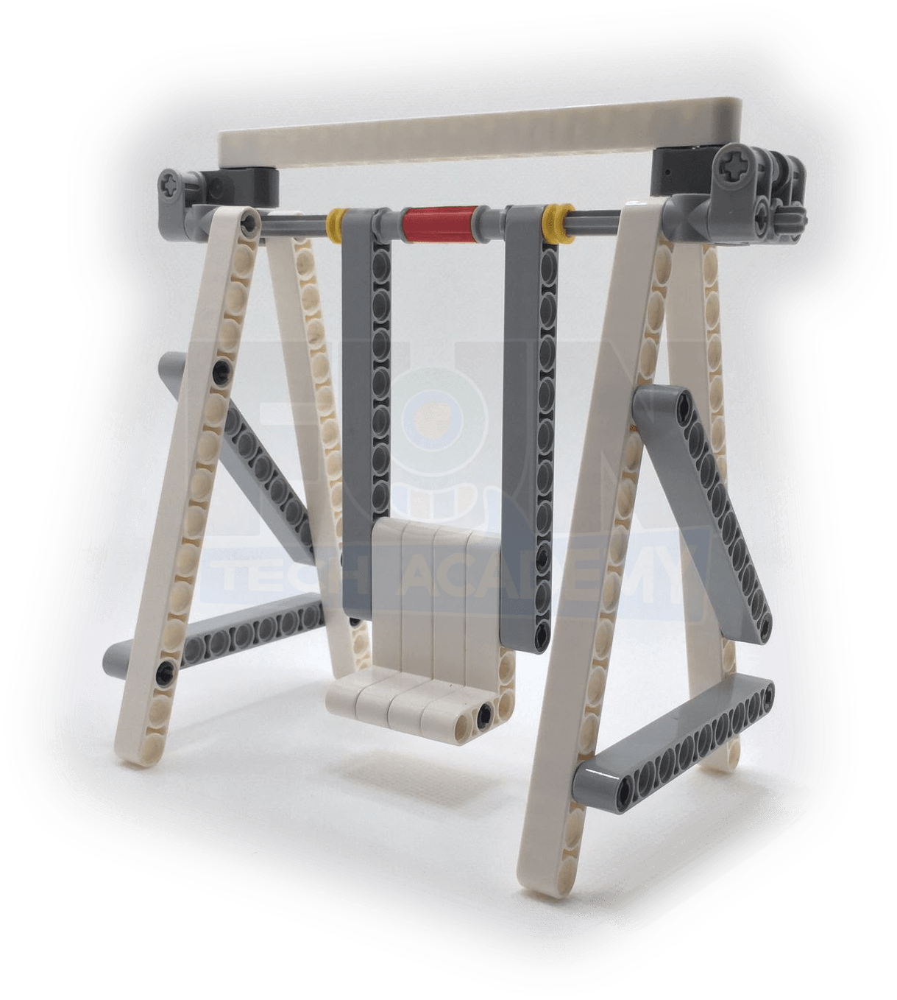